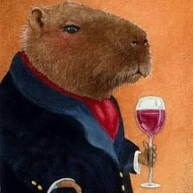

Capivaras (Hydrochoerus hydrochaeris) são os maiores roedores do mundo, nativas da América do Sul e amplamente distribuídas pelo Brasil. Podem pesar entre 35 e 65 kg, medir cerca de 1 a 1,3 m de comprimento e vivem tipicamente em grupos de 10 a 20 indivíduos, sempre próximas a rios, lagos, pântanos e áreas alagadas. São excelentes nadadoras, com membranas interdigitais nas patas, e passam boa parte do tempo na água tanto para se refrescar quanto para escapar de predadores como onças e jacarés. São animais herbívoros, alimentando-se principalmente de gramíneas, plantas aquáticas, frutas e, ocasionalmente, da própria casca de árvores. Têm hábitos crepusculares e noturnos, sendo mais ativas ao amanhecer e ao entardecer. Ficaram conhecidas também pelo temperamento dócil e pela convivência pacífica com outras espécies — imagens de capivaras cercadas por aves, patos ou até coabitando com animais domésticos circulam bastante nas redes. Apesar da aparência tranquila, são animais silvestres e sua adaptação a áreas urbanas no Brasil tem gerado debates sobre manejo da fauna em cidades.